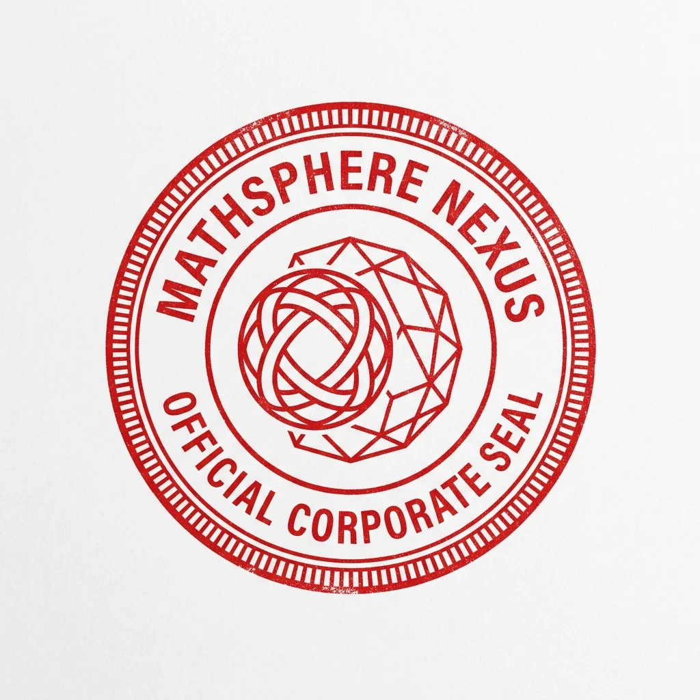

MathSphere NexusMathSphere Nexus — the Diary
The day began before dawn with a publication: Site Update 22 went live from the phone — the MN-Dev Guide opened with its first entry, and the Diary gained the entry that explains why the first guide is about permissions. Verified page by page from the public side, the way every update here is closed.
Then the Chromebook was wiped. The machine that carried this project’s first year was erased on purpose and reborn empty — nothing lost, because its state had been archived to the vault two days earlier, its receipts homed to the Trident, and its repositories live on GitHub. It came back with a narrower job: a creation and documentation desk, kept uncluttered — documents and creating only, no local models, the Trident remaining the machine of record. By the end of the day it held its tools again: git, the site clone, pandoc, and mdBook.
The afternoon designed something new. Wizard Central Pro will not be modified — but its bridge and its MCP wizard, copied by the author’s own hand from the current commit, will be fused into two new creations: a private engine, the MCP Nexus Engine Wizard, built to serve any project through configuration rather than hardcoding; and a public prototype stamped from it, Prototype Wizard Bridge One, with its own name, commands, and state. The design sheet went through four versions in a day, reviewed three times by a collaborator, corrected twice by the code itself. Five questions at its end await their rulings. Nothing is built yet, and the sheet says so.
The evening stamped a name. The old money blog, Bonus Code Central, becomes Rewards by Code — claimed with a dated public record, written in a developer’s voice, under the final tagline: “Discover Verified Systems & Earn More, Real Verifiable Rewards.” Two domains were registered the same evening, and the house rule was settled that every site in this house names MathSphere Nexus as its maker and points at the others openly.
The day closed with a showcase: the venv wizard, posted to the community with its test evidence, and its one defect — a search that stopped four folders deep — fixed in the author’s own shell the same night, the fix proven against the old behavior before it was kept. Still open at the day’s end: the Guard Test Lab’s stamp decision, presented in full that morning and awaiting its word; the engine’s five questions; and a money site designed and named, but not yet built.
— Alexander
A command is what you type. The name is what the project is.